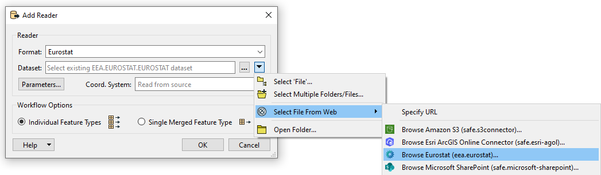

Eurostat Reader Parameters
Dataset / Authentication
Authentication:
- Click on the down arrow on the right side of the dataset.
- Choose "Select File From Web".
- Click on "Browse Eurostat (eea.eurostat)".

A new dialog window with the parameters will appear.
The Eurostat connection is a mandatory parameter that must be set.
- Web service: choose: Eurostat_v1 (eea.eurostat)
- Connection name: choose a name of your choice.
- Agency: The agency determines from which agency data is read. Different Agencies contain different dataflows.
- Local Cache Folder: There are a lot of dataflows to choose from. To avoid loading the list every time the information is stored as cache. This parameter lets you decide where you want to store this cache.
- Expiry Time (Seconds): This parameter determines how long the cache should be saved.
- Verify SSL Certificates: If checked, the reader will verify SSL certificates.
Once you've set up the webconnection. Click on "OK".
Choosing a Dataflow:
To select a dataflow navigating through the folders to the desired dataflow. Only 1 dataset can be chosen at a time.

Select a dataset and click on "ok".
You can use the Search function to quickly navigate to a dataflow you know the name of.
Optional extra Parameters
The Eurostat API limits filters to 1.000.000 features. Due to the size of datasets and the fact that some filters include null observations this limit is reached quite often. If this occurs the logfile say that the request was to big after returning an error. Sometimes using filters the request will force Eurostat to first create the file. It will be queued on their side and wont be added onto FME's canvas directly it will instead return an error. Reading the same data after a few minutes will result in the data being read. You can see when this occurs in the log when the result body xml includes a "queued" tag.
Filter on time
Optional. Providing a value for Start Period will ensure that data with a Time_Period greater than or equal to the given value will be read. Providing a value for End Period will ensure that data with a Time_Period less than or equal to the given value will be read. Values should correspond to the format for Time_Period for the chosen DataFlow. *1
| Period | Format |
|---|---|
| Annual | YYYY-A1 or YYYY |
| Semester | YYYY-S[1-2] |
| Quarter | YYYY-Q[1-4] |
| Monthly | YYYY-M[01-12] or YYYY-[01-12] |
| Weekly | YYYY-W[01-53] |
| Daily | YYYY-D[001-366] |
| Year interval | YYYY/P[01-99]Y |
*1 The filter used on time period is very strict and can be hard to set properly since the dataflow itself doesn't specify what it accepts in the name. To see which format of filter is allowed it is suggested to look at the Databrowser of Eurostat. Here you can search for the corresponding dataflow either by name or code. The Databrowser will then refer to the "Time Frequency" to help you choose the correct format for filtering.

Filter on first N and last N observations
Optional. This allows filtering data observations within a time series to limit the number of observations returned. Providing values will restrict the reader to only fetch the first N Observations and/or the last N Observations of the DataFlow with consideration taken to the optional Filter on time.
- This filter may be applied to data which has been filtered by dimension and / or time.
- First N Observations return the first N observations in the corresponding series
- Last N Observations return the last N observations in the corresponding series
- Both definitions may be applied e.g. to return the first and last observations in a series.
- If the filter is wrong, then a response is returned with no observation results.
Keep in mind that N observations does not equal N features. An observation is the unique combination of the codelists for a certain time period. As an example: When First N observations is set to 1. The first 3 rows of this dataflow are given as a result. This since 2013 is the first observation. But in this case Partner makes them unique for that time period. Making all these a first 1 observation.
| Freq | Partner | Unit | geo | time_period | obs_value |
|---|---|---|---|---|---|
| A | UNK | NR | AT | 2013 | 0 |
| A | TOTAL | NR | AT | 2013 | 54071 |
| A | NEU27_2020_FOR | NR | AT | 2013 | 22505 |
| A | UNK | NR | AT | 2014 | 4524 |